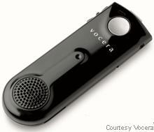

Trek Technology |
Star Trek esiste da oltre trent'anni ed è un dato di fatto che abbia influenzato in qualche modo la tecnologia applicata. Esistono alcuni esempi di apparecchiature o invenzioni dell'universo Trek che sono state ricalcate nella realtà.
Comunicatore della Serie ClassicaCartucce dati della Serie
Classica
Le cartucce dati colorate utilizzate nella Serie
Classica sono del tutto identiche come forma e dimensioni agli attuali
floppy da 3"½ inventati da Sony
una decina di anni più tardi ed utilizzati in tutti i personal computer
attuali.
Chip isolineari
Benché di capacità inferiore, le chiavette USB con memorie allo stato
solido diventate famose a partire dal 2002 hanno forme e dimensioni molto simile
ai chip ottici isolineari che si vedono da
The
Next Generation in avanti. Alcuni dispositivi sono racchiusi in
contenitori trasparenti colorati, proprio come i chip isolineari.
Hypospray
Recenti studi hanno dimostrato l'efficacia di iniezioni sottocutanee praticate
nebulizzando un liquido ad alta pressione nella cute dei pazienti, il principio
di questi trattamenti è lo stesso del hypospray;
esiste già in commercio un'apparecchiatura di questo tipo per gli studi
dentistici che inietta l'anestetico ad alta pressione direttamente alla base del
dente. La più promettente di queste pistole per iniezioni è Powder Ject, a
elio compresso, in sperimentazione al Radcliffer Hospital di Oxford alla fine
del 1996. Consiste di un tubo, con un grilletto a pulsante a una delle
estremità; schiacciando il pulsante viene aperta una valvola che consente
all'elio compresso di fuoriuscire dal serbatoio e di sparare il farmaco nel
braccio del paziente. Secondo i progettisti, potrà effettuare il 90% delle
iniezioni oggi eseguite con siringhe.
Riconoscimento vocale del computer
Lernout & Hauspie/Dragon Systems,
IBM e
Philips
producono dei software di riconoscimento vocale che riescono a identificare
correttamente il parlato naturale (circa 165 parole al minuto) con una
precisione del 95%, che aumenta se il software viene istruito a riconoscere il
timbro vocale di un singolo utente, arrivando così ad un'accuratezza del 99% e
oltre. Il prezzo di questi programmi è oggi alla portata di qualunque tasca e
non richiede hardware dedicato, come invece succedeva nei primi anni '90.
PADD
I PADD da The
Next Generation in avanti e i corrispondenti della Serie
Classica (quelli neri che ogni tanto venivano firmati da Kirk) non
sono molto diversi dai moderni palmari con OCR, capacità multimediali e
collegamento wireless con un personal computer e telefoni cellulari. Il primo
palmare venduto al pubblico è stato il Newton di Apple
(1995), a cui sono seguiti moltissimi altri modelli di altre case su cui girano
vari sistemi operativi.
In Enterprise si vedono dei
PADD molto simili agli iPAQ di Compaq.
Commbadge
La Olivetti inglese (per citarne una) ha realizzato nel 1985 un sistema
cercapersone all'interno di un'azienda basato su badge personali che emettono
infrarossi rilevati da una rete di ricevitori posta sui soffitti. Un server Novell
NetWare riceve ed elabora i dati raccolti dai sensori ed un apposito software è
in grado, tra le altre cose, di indirizzare una telefonata al telefono più
vicino al destinatario della telefonata stessa. Questo tipo di applicazioni ha
avuto scarso successo per timori di eccessivi controlli sui dipendenti.
Bisogna
attendere il 2004, però, perché un commbadge
come quello di The
Next Generation diventi un prodotto di consumo. La
Vocera
ha infatti
presentato un apparecchio (mostrato a lato) bastato su due chip: un DSP (Digital
Signal Processor) della Texas Intruments per il campionamento della voce e uno
per la gestione della comunicazione Wi-Fi con un server simile a quello che si
trova nei laptop. Premendo il pulsante sul comunicatore e pronunciando il nome
del destinatario della comunicazione viene attivata un'applicazione sul server
che riconosce il nome pronunciato, rintraccia il comunicatore del destinatario e
attiva una comunicazione tra i due con la tecnologia VOIP (Voice Over IP).
Holodeck
Gli attuali sistemi di realtà virtuale sono ben lontani dalle simulazioni dell'holodeck,
ma si stanno compiendo significativi progressi in questi ultimi anni. Va
comunque ricordato che nel 1987, quando è apparso per la prima volta un
holodeck in The Next Generation,
esisteva ben poco nel campo della realtà virtuale.
Computer M5 di The Ultimate Computer
Richard Daystrom, descrivendo le funzionalità del computer, dice che ha
ricostruito con dei circuiti complessi le sinapsi del cervello umano. Questa
tecnologia non è dissimile da alcuni microchip sperimentali che simulano le
sinapsi e dai programmi basati sulla teoria informatica delle reti neurali.
Doccia Sonica
In Giappone è stata inventata una lavatrice che usa gli ultrasuoni per pulire
meglio il bucato. Potrebbe essere un primo passo verso una doccia sonica per
umani.
Replicatore
Nel 1996 la 3D Systems di Valencia, California, ha inventato qualcosa di simile
ad un replicatore. Si tratta in pratica
di un fax tridimensionale, con il quale possono essere trasmesse copie di
oggetti attraverso una linea dati. Il dispositivo ha dei limiti: gli oggetti
creati dalla stazione ricevente sono in materiale plastico e non è ovviamente
in grado di replicare congegni meccanici o elettronici, ma solamente la forma
esteriore dell'oggetto. Funzionamento: un laser alla postazione di partenza
legge la forma dell'oggetto, quello alla postazione di arrivo riproduce la forma
originale solidificando in punti ben precisi un polimero plastico liquido.
Michael Hart, promotore del Project Gutenberg, ha detto una volta: «In una qualche data tra oggi e Star Trek, tutta quella roba finirà nel computer. Nessuno mette mai in discussione il fatto che tutti i libri scritti durante tutta la storia umana siano nel computer dell'Enterprise, ma nessuno si domanda mai come ci siano arrivati. Noi siamo quelli che li mettono dentro.»